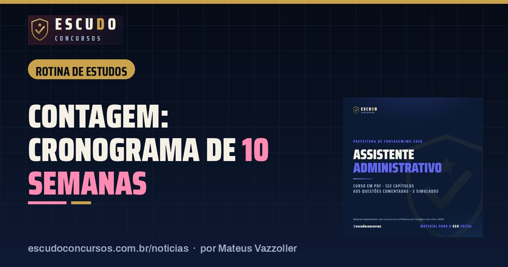

Cronograma de estudos Contagem Assistente Administrativo: 10 semanas até a prova de 24/01/2027
Rotina de estudosPublicado em 18 de novembro de 2026 · por Mateus Vazzoller, ESCUDO Concursos

Quem quer ocupar uma mesa no protocolo, no almoxarifado ou no balcão de atendimento de uma secretaria da Prefeitura de Contagem tem 10 semanas até a prova objetiva do IBGP para Assistente Administrativo, no domingo, 24/01/2027. E quem ainda não se inscreveu ganhou mais prazo: a Retificação nº 03, publicada em 17/11/2026, levou as inscrições até 03/12/2026, às 16h, com boleto pago até 04/12/2026. Este plano reparte 15 horas por semana pelo peso de cada bloco da prova e deixa as três últimas semanas para simulado e revisão.
| Prova | 24/01/2027, domingo, das 9h15 às 12h15 |
|---|---|
| Tempo até a prova | 10 semanas a partir de 18/11/2026 |
| Carga sugerida | 15 horas por semana |
| Prova objetiva | 45 questões de A a D, 100 pontos, mínimo de 60 sem zerar nenhum conteúdo |
| Inscrições | prorrogadas até 03/12/2026, às 16h, boleto até 04/12/2026 |
| Comprovante com o local | 15/01/2027 |
O que mudou com a Retificação nº 03?
Para o cargo 301, mudaram só os prazos da inscrição e das listas que vêm depois dela. A data da prova, o turno da manhã, as 45 questões e o programa continuam iguais. A mudança maior da retificação foi em outro cargo: o 531, Técnico Superior em Gestão Pública Municipal, foi revogado, e o total do concurso caiu para 269 vagas.
| Etapa | Antes | Agora |
|---|---|---|
| Fim das inscrições | 17/11/2026, às 16h | 03/12/2026, às 16h |
| Pagamento do boleto | 18/11/2026 | 04/12/2026 |
| Inscrições deferidas e listas de vagas reservadas | até 24/11/2026 | até 10/12/2026 |
| Recurso contra o resultado das inscrições | 11/12 a 15/12/2026 | |
| Comprovante Definitivo de Inscrição, com o local | 15/01/2027 | 15/01/2027 |
| Prova objetiva | 24/01/2027 | 24/01/2027 |
Como dividir 15 horas por semana?
A conta segue os pontos, não o número de questões. Os Conhecimentos Específicos têm 20 questões de peso 3 e valem 60 dos 100 pontos, então ficam com quase metade do tempo. Português e Raciocínio Lógico têm peso 2. Informática e Conhecimentos Gerais do Município valem 5 pontos cada, mas zerar qualquer um deles elimina, por isso nenhum fica sem horário.
| Disciplina | Questões | Pontos | Horas por semana |
|---|---|---|---|
| Conhecimentos Específicos | 20 | 60 | 7h |
| Língua Portuguesa | 10 | 20 | 3h30 |
| Raciocínio Lógico | 5 | 10 | 2h |
| Noções de Informática | 5 | 5 | 1h15 |
| Conhecimentos Gerais do Município | 5 | 5 | 1h15 |
| Total | 45 | 100 | 15h |
Em Conhecimentos Gerais, o estudo é pelo material oficial indicado pelo IBGP, o Atlas Escolar Histórico, Geográfico e Cultural de Contagem-MG. A Lei Orgânica, o Estatuto dos Servidores e o Plano de Cargos foram revogados do programa e não precisam de horário.
Semana a semana até a prova
Os Específicos seguem a ordem do Anexo IV, com a Lei 14.133/2021 dividida em duas semanas porque é o texto mais longo do programa. Português, Raciocínio Lógico, Informática e Conhecimentos Gerais entram toda semana, em doses menores.
| Semana | Período | Foco nos Específicos | Também na semana |
|---|---|---|---|
| 1 | 18/11 a 22/11 | Administração Pública: princípios, administração direta e indireta, centralização, descentralização e desconcentração | Português: interpretação de textos |
| 2 | 23/11 a 29/11 | Lei 14.133/2021, parte 1: princípios, modalidades e contratação direta | Raciocínio: porcentagem e regra de três |
| 3 | 30/11 a 06/12 | Lei 14.133/2021, parte 2: procedimentos, contratos, gestão, fiscalização e sanções | Inscrições terminam em 03/12, às 16h |
| 4 | 07/12 a 13/12 | Rotinas administrativas e gestão de documentos: protocolo, classificação, tramitação e arquivamento | Informática: Windows 10 e 11 |
| 5 | 14/12 a 20/12 | Administração de materiais: almoxarifado, controle de estoques e inventário | Conhecimentos Gerais pelo Atlas |
| 6 | 21/12 a 27/12 | Atendimento ao cidadão, ética e relações no trabalho | Semana do Natal: manter ao menos as questões |
| 7 | 28/12 a 03/01 | Redação oficial e Lei de Acesso à Informação (Lei 12.527/2011) com a LGPD (Lei 13.709/2018) | Raciocínio: lógica proposicional |
| 8 | 04/01 a 10/01 | Revisão dos Específicos, com a Lei 14.133 de novo | Primeiro simulado de 45 questões em 3 horas |
| 9 | 11/01 a 17/01 | Só os blocos em que o simulado foi pior | Comprovante com o local sai em 15/01 |
| 10 | 18/01 a 24/01 | Revisão leve dos resumos e dos erros | Descanso na véspera, 23/01; prova em 24/01 |
Até a semana 5, metade do tempo é teoria e metade é questão. Nas semanas 6 e 7, a proporção vira um terço de teoria e dois terços de questão. Da semana 8 em diante, não entra conteúdo novo.
Como fazer o simulado da semana 8?
- Faça as 45 questões de uma vez, de manhã, em 3 horas, para acostumar o corpo ao horário da prova, das 9h15 às 12h15.
- Reserve os últimos 15 minutos para passar as respostas para a folha, como no dia da prova. Sobram cerca de 3 minutos e 40 segundos por questão.
- Corrija pela régua do edital: pelo menos 60 dos 100 pontos, com os Específicos multiplicados por 3 e Português e Raciocínio por 2, e nenhum dos cinco conteúdos zerado.
- Anote o bloco que mais tirou pontos e leve a semana 9 inteira para ele.
O curso ESCUDO para Assistente Administrativo de Contagem libera o Simulado 2 em 17/01/2027, no fim da semana 9, para servir de último teste antes da revisão final.
E se eu só tiver 8 horas por semana?
Mantenha a ordem das semanas e corte em proporção: Específicos 4h, Português 2h, Raciocínio Lógico 1h, Informática 30 minutos e Conhecimentos Gerais 30 minutos. Não tire Informática nem Conhecimentos Gerais da agenda: com 5 questões cada, uma hora por semana somada já evita o zero que elimina.
Curso ESCUDO Assistente Administrativo de Contagem/MG em PDF: 122 capítulos e 605 questões comentadas, 2 simulados no formato da prova, de acordo com o edital. De R$ 47 por R$ 37 com o cupom CONTAGEM37 até 03/12/2026.
Ver o curso
Perguntas frequentes
As inscrições de Contagem foram prorrogadas?
Sim. A Retificação nº 03, de 17/11/2026, estendeu as inscrições para Assistente Administrativo até 03/12/2026, às 16h, no site do IBGP, com boleto pago até 04/12/2026.
A data da prova de Contagem mudou?
Não. A prova objetiva continua no domingo, 24/01/2027, de manhã, das 9h15 às 12h15, com portões fechando às 9h.
Qual matéria estudar primeiro para Assistente Administrativo de Contagem?
Os Conhecimentos Específicos, que valem 60 dos 100 pontos, começando por Administração Pública e pela Lei 14.133/2021. Português vem em seguida, com 20 pontos.
Leia também
- Rotina de estudosCronograma de estudos Policial Penal PE: 16 semanas até a prova de 21/03/2027
25 de novembro de 2026 · Plano de 16 semanas para a prova do Cebraspe de 21/03/2027 para Policial Penal de Pernambuco: 15 horas por semana, Execução Penal primeiro e discursiva semanal.
- Rotina de estudosCronograma Agente Administrativo de Curitiba: 3 semanas até a prova de 13/12/2026
24 de novembro de 2026 · Cronograma de 3 semanas para a prova da FAFIPA de 13/12/2026 para Agente Administrativo de Curitiba: meta de acertos por área, plano semanal e reta final.
- Rotina de estudosCronograma de estudos PM-PE Soldado: 13 semanas até a prova de 21/02/2027
22 de novembro de 2026 · Plano de 13 semanas para a prova do Instituto AOCP de 21/02/2027 para Soldado da PM de Pernambuco: 15 horas por semana, Bloco III primeiro e redação semanal.
Guia completo do concurso: edital, vagas e o que cai · Mais notícias e dicas de concursos